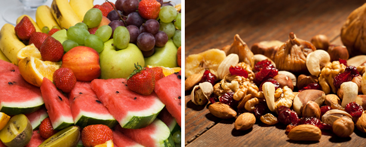

Okul öncesi dönemdeki (0-6 yaş) çocuklarda 20 adet süt dişi bulunmaktadır. Süt dişleri, bu dönemde mutlaka anne-babalar tarafından temizlenmeli ancak aynı zamanda çocuklara diş fırçalama alışkanlığının da bu dönemde kazandırılması gerekmektedir. Süt dişlerinin sağlıklı olması en az sürekli dişler kadar önemlidir. Süt dişlerinin nasıl olsa düşecekleri düşünülüp oluşan çürüklerin tedavi ettirilmemesi bu dişlerin vaktinden önce kaybedilmesine yol açabilir. Bu da sürekli dişlerin diziliminin bozulmasına ve çocuğun belki de hiç ihtiyacı olmayacakken ortodontik tedavi (tel tedavisi) gereksinime neden olabilir. Tedavi edilmeyip uzun süre ağızda kalan çürük süt dişlerinin kök ucunda oluşan iltihap, çocuğun genel sağlığını etkileyebileceği gibi süt dişinin altında bulunan sürekli diş germine de zarar verebilir.
Çocuklarda diş fırçalama alışkanlığının gelişebilmesi için okul öncesi dönemde bu konuya özen göstermek gerekir. İlk diş ağızda görünmeye başladıktan sonra her sabah kahvaltıdan sonra ve akşamları yatmadan önce dişlerinin fırçalanmasına alışan bir çocuk, okul döneminde de aynı alışkanlığa kendiliğinden sahip olacaktır. Çocuklarda diş fırçalama aynı zamanda el gelişimleri açısından da önemlidir. Bu nedenle anne-babalar, önce çocuklarının kendilerinin dişlerini fırçalamasına izin vermeli, son fırçalamayı ise beraberce bitiriyor olmalıdırlar. Yapılan çalışmalar çocukların doğru bir diş fırçalaması yapabilmeleri için motor becerilerinin yaklaşık 7-8 yaş civarında tamamlanabildiğini göstermektedirler. Bu nedenle anne-babaların bu yaşa kadar çocuklarının diş fırçalamasında etkin rol oynamaları gerekir.

Okul Döneminde Ağız ve Diş Sağlığı
Okul döneminde sabah kalkma saati, kahvaltı etme, akşam yemeği ve yatağa gidiş zamanına kadar herşeyin zamanı belli olduğu için diş çürüklerinden korunma çok daha kolay olmaktadır. Çünkü her gün belli saatte kahvaltı eden ve yemek yiyen bir çocuğun diş çürüğünün başlıca nedenlerinden olan ara öğün tüketim sıklığı çok daha az olur. Ayrıca sabahları servise yetişmek zorunda olmaları, akşam da ödevleri bitirip erkenden yatağa gitmeleri gerektiğinden yemek yeme süreleri de daha kısa olmaktadır. Bu da yiyeceklerin dişle temas süresinin azalmasını sağlar. Bilindiği gibi çocuklar sofradan kalkıp gidip gelerek yemek yemeyi veya televizyon izlerken çok uzun süre yiyecekleri ağızda tutmayı severler. Diş çürüğü oluşumunda büyük etkisi olan bu durumla okul döneminde daha az karşılaşmaktayız. Bununla birlikte, öğün sonralarında diş fırçalaması da çok önemli. Sabah kahvaltı sonrası ve akşam yemek sonrasında düzenli ve doğru bir yöntemle dişlerini fırçalandığı sürece diş çürüğü oluşumunun önüne geçmek mümkün olabilmektedir.
Sabah kahvaltısında tüketilen pekmez, bal, kakaolu veya sade süt gibi çürük yapıcı gıdalar eğer tüm gün dişler üzerinde kalırsa kısa sürede çürük oluşumuna neden olabilmektedir.Bu nedenle okul döneminde mutlaka kahvaltı sonrasında dişler fırçalanarak evden çıkılmalıdır. Bazı çocuklar kahvaltısını okulda yaptığı için sabah evden çıkarken diş fırçalamasına gerek olmadığı düşünülür. Ancak gece boyunca diş üzerinde biriken plağın dişlerin fırçalanmasıyla uzaklaştırılması sayesinde sonradan okulda yapılan kahvaltıda karbonhidratla plak diş yüzeyinde birleşemeyeceği için çürük oluşum riski azalmış olmaktadır. Ayrıca sabahları dişlerin fırçalanması mutlaka geliştirilmesi gereken bir alışkanlık olduğundan kahvaltı yapsın ya da yapmasın dişlerini fırçalamaya bu dönemde alışan bir çocuk, bu alışkanlığını ömür boyu devam ettirecektir.
Akşam yemeğinden sonra da dişlerin fırçalanması çok önemlidir. Okul döneminde akşamları erken yatıldığından akşam yemeğinin yenilmesi, ödevlerin yapılması, ertesi güne okul çantasının hazırlanması derken çoğu zaman diş fırçalamaya vakit bulunamaz. Ancak dişler fırçalanmadığında sabaha kadar diş yüzeyinde kalan yiyecek artıkları, uyku sırasında tükürük akışı da çok azaldığından çürük oluşumunu hızlandırmaktadır. Sadece 2 dakikamızı alacak olan diş fırçalama yapılmadığında, oluşan diş çürüklerinin tedavisi için birçok saatin diş hekimi koltuğunda geçirilmesi gerekebiliyor. Gece boyunca diş çürüğünün oluşmaması için sadece yatmadan hemen önce dişlerin fırçalanması yeterli olmaz. Dikkat edilmesi gereken birkaç önemli nokta daha vardır:
Gece yatmadan önce süt içme alışkanlığı olan çocuklarda dişler fırçalansa bile sütün tamamen diş yüzeyinden uzaklaştırılması zor olmaktadır. Bu nedenle sütün yatmadan en az 1 saat önce içilmesi ve dişlerin sütü içtikten sonra fırçalanması gerekir. Hatta mümkünse çocuğunuzun süt içme alışkanlığını gündüz saatlerine kaydırmanız ve gece yatmadan önce süt içmemesi ağız ve diş sağlığı açısından büyük önem taşır.
Okul döneminde grip vb hastalıklara yakalanma riski de yüksektir. Bu nedenle çocuklar, antibiyotik, ateş düşürücü veya vitamin gibi şurupları sıklıkla içmek zorunda kalırlar. Çoğu zaman yapılan hata dişler fırçalanır, pijamalar giyilir ve yatağa girdikten sonra şurup içirilir. Ancak çocuk şuruplarının içerisine içimlerini kolaylaştırmak için çoğu zaman şeker katılmaktadır. Bu nedenle çocuğunuza şurup verdiğinizde şekerli bir meyve suyu vermiş gibi düşünebilirsiniz. Çünkü bu ilaçlar da diş yüzeyinde kaldığında gece boyunca aynı çürük yapıcı etkiyi göstermektedir.
Dişler fırçalandıktan sonra sadece su içilebilir. Bunun dışında içilen ya da yenilen her şeyden sonra yeniden dişlerin fırçalanması gerekir.
Diş çürüklerinin sıklıkla oluştuğu bir diğer önemli zaman da ara öğünlerdir. Ara öğünlerde tüketilen yiyecek ve içecekler çoğunlukla atıştırma tarzında olduğundan diş çürüğü oluşturma riskleri oldukça yüksektir. Genellikle okuldan gelen çocuklara akşamüstü saatlerinde süt veya meyve suyuyla birlikte kurabiye, bisküvi, poğaça gibi yiyecekler verilir. Bu tarz yiyecek ve içeceklerin karbonhidrat ve şeker içerikleri yüksektir ve diş yüzeylerinden uzaklaştırılmaları da oldukça zordur. Ara öğünlerde ağız ve diş sağlığı açısından tüketilmesi en çok önerilen yiyecekler, besin değeri de daha yüksek olan peynirli sandviç, yoğurt, taze meyve/sebze, kuruyemiştir.

Çocuklarda diş çürüklerinin tedavi edilmesi hem çocuğu hem de anne-babayı oldukça zorlayan bir durumdur. Ders yoğunluklarının olduğu bu dönemde ağrılı bir diş nedeniyle uykusuz kalan veya tedavisi için okula gidemeyen çocuklarda bozulan düzenin yeniden oluşturulması zaman alabilmektedir. Bu nedenle, özellikle bu dönemde çürük oluşma riskini en aza indirmek gerekir.
Okul döneminde çocuğunuzda diş çürüğü oluşma riskini en aza indirmek için öneriler:
Çocuğunuzun sabah kahvaltı sonrası ve akşamları yatmadan önce günde en az iki kez dişlerini fırçalamasını sağlayın.
Çocuğunuzun şeker tüketimini sınırlandırın. Şekerli yiyecek ve içecekleri ara öğünlerde vermek yerine ana öğünlerden hemen sonra verip sonrasında dişlerini fırçalamasını sağlayın.
Okulların başladığı bu dönemlerde pedodontistinize (Çocuk Diş Hekimine) giderek çocuğunuzun ağız ve diş sağlığı muayenesini yaptırın. Bu sayede eğer varsa çürükler başlangıç aşamasında ağrı yapmadan tedavi edilir ve eğitim dönemi daha rahat geçer.
Çürük oluşumunu önlemek ve dişleri çürük oluşumuna karşı güçlendirmek amacı ile fissür örtücü ve yüzeyel fluorid uygulamaları gibi diş çürüğünden koruyucu uygulamaları, okulların başladığı bu dönemde yaptırmanız büyük önem taşımaktadır.